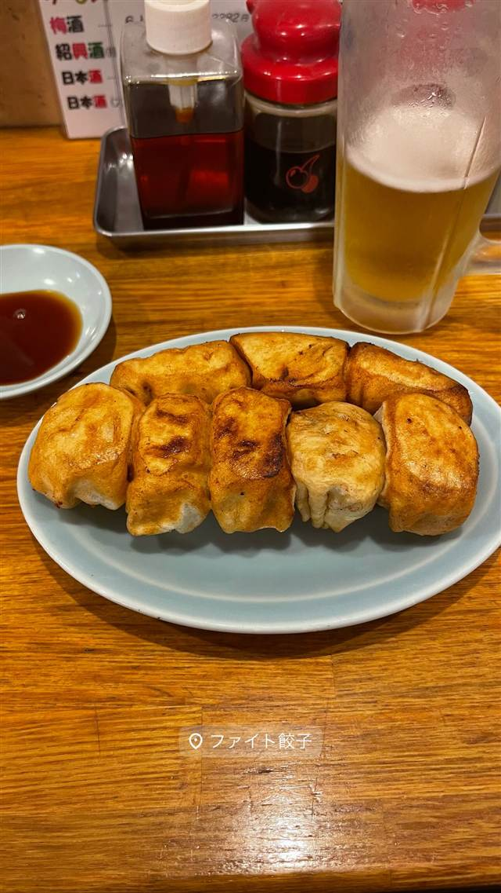

町中華 · 餃子専門 · 巣鴨
ファイト餃子
ホワイト餃子ののれん分け、油で揚げてから焼く俵形餃子
ファイト餃子
千葉・野田発祥の『ホワイト餃子』ののれん分け店として1973年に創業。厚い皮で包み、油で揚げてから焼く独特の俵型餃子が名物で、注文のたびに焼き上げるため待ち時間があるが行列の絶えない人気店。
TRIVIA
豆知識
- 「ホワイト餃子」の名は、創業者が旧満州で中国人の『白（パイ）』さんに餃子作りを教わったことに由来するという
- 俵型のユニークな見た目で、皮は厚く、片面はカリッと片面はもちもちに焼き上げる
- ニンニクを使わず20種の木の実を使った薬膳餡を用いている
REVIEWS
世間の評判
3.49食べログ
厚皮でジューシーな餃子の軽さ
- 皮は厚めでもちっとしていて餡はジューシーで軽いという声が多い
- 8個600円など値段が手頃で油っこさを感じないという声もある
- 開店直後から行列ができ40分ほど並んだという人もいるほど混雑する
- 餡が細かく刻まれ歯応えがないと感じる人もいて好みが分かれるという声もある
食べログ 口コミ1404件
| 創業 | 1973年創業 |
|---|---|
| 系譜 | 千葉県野田市発祥「ホワイト餃子」の技術連鎖店（のれん分け） |
| 看板 | 揚げ焼き餃子（俵型のホワイト餃子） |
| こだわり | 厚めの皮で具を包み、油で揚げてから焼く独特の製法。注文後に焼き上げるため提供まで約15分かかる。ニンニクを使わず20種の木の実を使った薬膳餡が特徴 |
| どこから | 都心 |
| 行くなら | 行列 |
| 予算 | 昼 ¥2,000～¥2,999 夜 ¥2,000～¥2,999 |
| 場所 | 庚申塚 東京都豊島区西巣鴨(巣鴨地蔵通り周辺) |
| メモ | 入店待ち・持ち帰り待ちともに行列ができる人気店。焼き上がりまで待ち時間あり |
食べたもの：焼き餃子とビール
NEARBY
近い店・同じ系統の店
-
 ★
家系 巣鴨駅
こいけのいえけい
小池グループ初の家系専門店、元は人気の裏メニュー
昼 ～¥999 夜 ～¥999
★
家系 巣鴨駅
こいけのいえけい
小池グループ初の家系専門店、元は人気の裏メニュー
昼 ～¥999 夜 ～¥999
-
 餃子専門 亀戸駅
亀戸餃子 本店
座ると自動で2皿確定、1955年創業の下町餃子専門店
昼 ～¥999 夜 ～¥999
餃子専門 亀戸駅
亀戸餃子 本店
座ると自動で2皿確定、1955年創業の下町餃子専門店
昼 ～¥999 夜 ～¥999
-
 餃子専門 幡ヶ谷
您好（ニイハオ）
ひき肉でなく粗く刻んだ肉を使う、連続ビブグルマンの餃子
昼 ¥2,000～¥2,999 夜 ¥2,000～¥2,999
餃子専門 幡ヶ谷
您好（ニイハオ）
ひき肉でなく粗く刻んだ肉を使う、連続ビブグルマンの餃子
昼 ¥2,000～¥2,999 夜 ¥2,000～¥2,999
-
 餃子専門 乃木坂
赤坂珉珉（みんみん）
酢コショウで食べる元祖、渋谷の名店直系ののれん分け店
夜 ¥4,000～¥4,999
餃子専門 乃木坂
赤坂珉珉（みんみん）
酢コショウで食べる元祖、渋谷の名店直系ののれん分け店
夜 ¥4,000～¥4,999
-
 餃子専門 銀座一丁目
銀座天龍 本店
ニンニクを使わず白菜と豚肉だけで作る12cmの大判餃子を創業以来守る
昼 ¥1,000～¥1,999 夜 ¥3,000～¥3,999
餃子専門 銀座一丁目
銀座天龍 本店
ニンニクを使わず白菜と豚肉だけで作る12cmの大判餃子を創業以来守る
昼 ¥1,000～¥1,999 夜 ¥3,000～¥3,999
-
 餃子専門 飯田橋駅
餃子の店 おけ以
東京に焼き餃子を広めた老舗、羽根つき餃子は1日1300個
昼 ¥1,000～¥1,999 夜 ¥1,000～¥1,999
餃子専門 飯田橋駅
餃子の店 おけ以
東京に焼き餃子を広めた老舗、羽根つき餃子は1日1300個
昼 ¥1,000～¥1,999 夜 ¥1,000～¥1,999